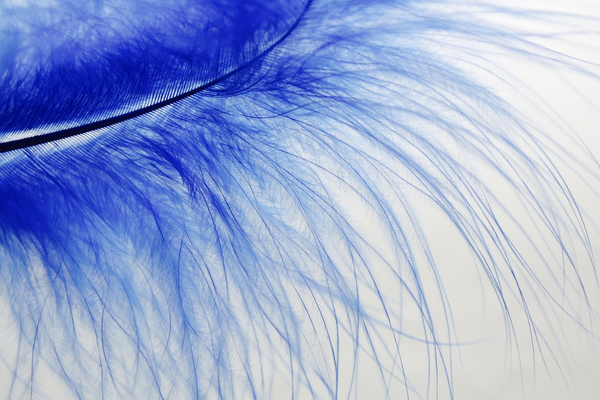

포토레지스트 잔류물 차단 2D 반도체 보호 공정 개발

반도체 미세 공정에서 포토레지스트(PR) 패터닝은 회로를 새기는 필수 단계지만, 공정 후 남는 잔류물(스컴·residue)이 소자 표면을 오염시켜 전기적 특성을 저하시키는 고질적 문제가 있었다. 특히 차세대 2D 반도체 소재는 두께가 원자 수준에 불과해 이 오염에 훨씬 민감하다.
국내 연구팀은 2D 반도체 소재 위에 포토레지스트를 도포하기 전, 초박막 보호층을 선행 삽입하는 방식으로 잔류 오염물의 직접 접촉을 원천 차단하는 공정을 개발했다고 발표했다. 보호층은 공정 완료 후 선택적으로 제거되어 소자 특성에 영향을 주지 않는다.
2D 반도체 소재로는 이황화몰리브덴(MoS₂), 이황화텅스텐(WS₂), 이셀레늄화텅스텐(WSe₂) 등이 주목받고 있다. 이들 소재는 기존 실리콘 대비 전자 이동도와 전력 효율이 뛰어나 2나노 이하 차세대 트랜지스터 채널 소재로 TSMC, 인텔 등이 적극 연구 중이다.
연구팀은 보호층 적용 후 MoS₂ 기반 트랜지스터의 전계 효과 이동도(field-effect mobility)가 비보호 시 대비 약 40% 향상됐으며, 문턱 전압 산포도 크게 줄었다고 발표했다. 이는 공정 표준화와 대면적 집적도 향상에 직접 기여하는 수치다.
이 기술의 차별성은 기존 반도체 제조 장비와의 호환성에 있다. 보호층 형성 및 제거에 현재 양산 팹에서 사용하는 원자층증착(ALD) 장비와 습식 세정 공정을 그대로 활용할 수 있어 상용화 진입 장벽이 낮다는 평가다.
반도체 소재 업계는 이번 기술을 2D 반도체 상용화의 병목 구간 중 하나를 해소하는 성과로 보고 있다. 한 소재 기업 연구소장은 '2D 소재의 성능은 이미 입증됐지만 공정 재현성과 수율이 문제였는데, 이번 보호 공정이 그 간극을 좁혀줄 것'이라고 말했다.
글로벌 반도체 소재 기업들도 2D 반도체 소재 시장 선점을 위해 개발에 속도를 내고 있다. 독일 머크(Merck KGaA)는 2D 소재 전용 증착 전구체 포트폴리오를 확대하고 있으며, 미국 에어프로덕츠도 관련 공정 가스 공급망을 준비 중이다. 국내에서는 SK머티리얼즈, 솔브레인 등이 ALD 전구체 및 세정 소재 분야에서 기회를 노리고 있다.
이번 연구 결과는 반도체 공정 소재 분야 국제 학술지에 게재될 예정이며, 관련 특허도 출원 중이다. 연구팀은 향후 기업 기술이전을 통해 실제 팹 환경에서의 검증 단계로 나아갈 계획이라고 밝혔다.
2D 반도체 기반 소자가 실제 양산에 진입하는 시점은 업계에서 2028~2030년으로 보고 있다. 이 시기까지 공정 소재와 보호 기술의 표준화가 이루어지지 않으면 2D 반도체 전환 자체가 지연될 수 있어, 이번 연구의 상용화 속도가 업계 전체의 로드맵에 영향을 미칠 변수로 꼽힌다.
국내 소부장 정책과의 연계도 주목된다. 산업통상자원부가 추진하는 '소부장 강소기업 100' 프로그램과 KAIST·연세대 등 대학 연구팀의 협력 연구가 이어지면서, 2D 반도체 소재 및 공정 기술이 국산화 핵심 과제로 자리를 잡아가고 있다.
전문가들은 이번 보호 공정 기술이 포토레지스트 소재 자체의 혁신과 함께 진행될 때 효과가 극대화된다고 강조한다. 특히 EUV용 화학증폭형 레지스트(CAR)와 2D 소재의 계면 특성을 최적화하는 연구가 병행되어야 한다는 지적도 나온다.